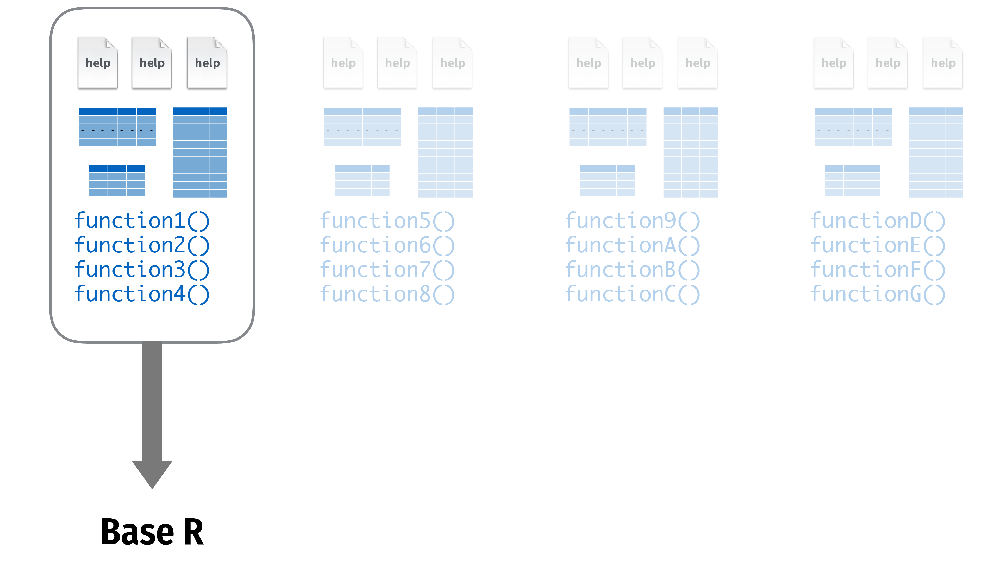
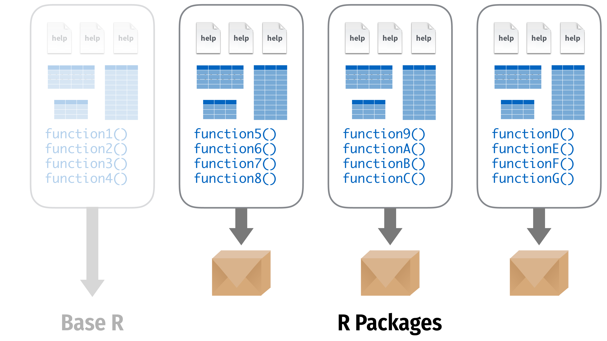
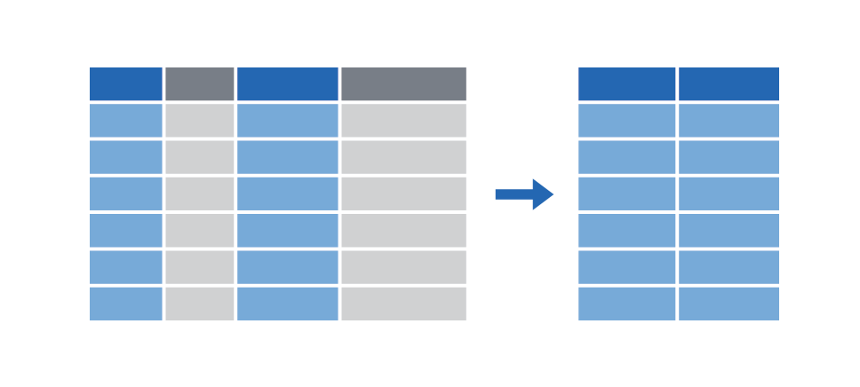

| Survey Question | Answer Options | Variable Name | Variable Type |
|---|---|---|---|
| How far do you live from the Jourdan University building? | |||
| How do you get there, usually? | |||
| How much time approximately does it take you to get there? | |||
| What arrondissement/suburb do you live in? | |||
| Compared to your classmates, how close do you think you live to University? | |||
| What’s the most annoying part of your itinerary to/from university? | |||
| Please indicate your level of (dis)agreement with the following statement: 'My itinerary to university is annoying.' |
Variables, Distributions and Plots
Overview
- Data Basics
- Variables
- Data frames
- Data Wrangling in the Tidyverse
- Data structure
- Classes
- Vectors
- Subsetting
- Distributions
- Summary and key takeaways
- Markdown and universal writing
- Office Model vs. Engineering Model
- Excel failures
- Markdown
- Writing reports in Quarto
- What is Quarto?
- YAML header
- Code chunks
- Text formatting
- Run and render your code
- Inline code
- Tables
- Preset themes
- Report parameters
Data basics
Variables
A variable is …
Some measure that can vary.
Variables
Imagine you fill out a survey about your way to school.
Variables
Variables
| Survey Question | Answer Options | Variable Name | Variable Type |
|---|---|---|---|
| How far do you live from the Jourdan University building? | Use the exact distance in km | ||
| How do you get there, usually? | Bike, Metro, Walking, or Other | ||
| How much time approximately does it take you to get there? | less than 15 mins, between 15 and 60 mins, more than 60 mins | ||
| What arrondissement/suburb do you live in? | Open-ended | ||
| Compared to your classmates, how close do you think you live to University? | Closer, About the same, Further away | ||
| What’s the most annoying part of your itinerary to/from university? | Describe briefly | ||
| Please indicate your level of (dis)agreement with the following statement: 'My itinerary to university is annoying.' | 1: Fully disagree – 5: Fully agree |
Variables
| Survey Question | Answer Options | Variable Name | Variable Type |
|---|---|---|---|
| How far do you live from the Jourdan University building? | Use the exact distance in km | Distance to school | |
| How do you get there, usually? | Bike, Metro, Walking, or Other | Mode of transportation | |
| How much time approximately does it take you to get there? | less than 15 mins, between 15 and 60 mins, more than 60 mins | Travel time | |
| What arrondissement/suburb do you live in? | Open-ended | Place of residence | |
| Compared to your classmates, how close do you think you live to University? | Closer, About the same, Further away | Relative perceived distance | |
| What’s the most annoying part of your itinerary to/from university? | Describe briefly | Object of annoyance | |
| Please indicate your level of (dis)agreement with the following statement: 'My itinerary to university is annoying.' | 1: Fully disagree – 5: Fully agree | Degree of annoyance |
Variables
| Survey Question | Answer Options | Variable Name | Variable Type |
|---|---|---|---|
| How far do you live from the Jourdan University building? | Use the exact distance in km | Distance to school | Numeric |
| How do you get there, usually? | Bike, Metro, Walking, or Other | Mode of transportation | |
| How much time approximately does it take you to get there? | less than 15 mins, between 15 and 60 mins, more than 60 mins | Travel time | |
| What arrondissement/suburb do you live in? | Open-ended | Place of residence | |
| Compared to your classmates, how close do you think you live to University? | Closer, About the same, Further away | Relative perceived distance | |
| What’s the most annoying part of your itinerary to/from university? | Describe briefly | Object of annoyance | |
| Please indicate your level of (dis)agreement with the following statement: 'My itinerary to university is annoying.' | 1: Fully disagree – 5: Fully agree | Degree of annoyance |
Variables
| Survey Question | Answer Options | Variable Name | Variable Type |
|---|---|---|---|
| How far do you live from the Jourdan University building? | Use the exact distance in km | Distance to school | Numeric |
| How do you get there, usually? | Bike, Metro, Walking, or Other | Mode of transportation | Nominal |
| How much time approximately does it take you to get there? | less than 15 mins, between 15 and 60 mins, more than 60 mins | Travel time | |
| What arrondissement/suburb do you live in? | Open-ended | Place of residence | |
| Compared to your classmates, how close do you think you live to University? | Closer, About the same, Further away | Relative perceived distance | |
| What’s the most annoying part of your itinerary to/from university? | Describe briefly | Object of annoyance | |
| Please indicate your level of (dis)agreement with the following statement: 'My itinerary to university is annoying.' | 1: Fully disagree – 5: Fully agree | Degree of annoyance |
Variables
| Survey Question | Answer Options | Variable Name | Variable Type |
|---|---|---|---|
| How far do you live from the Jourdan University building? | Use the exact distance in km | Distance to school | Numeric |
| How do you get there, usually? | Bike, Metro, Walking, or Other | Mode of transportation | Nominal |
| How much time approximately does it take you to get there? | less than 15 mins, between 15 and 60 mins, more than 60 mins | Travel time | Ordinal |
| What arrondissement/suburb do you live in? | Open-ended | Place of residence | |
| Compared to your classmates, how close do you think you live to University? | Closer, About the same, Further away | Relative perceived distance | |
| What’s the most annoying part of your itinerary to/from university? | Describe briefly | Object of annoyance | |
| Please indicate your level of (dis)agreement with the following statement: 'My itinerary to university is annoying.' | 1: Fully disagree – 5: Fully agree | Degree of annoyance |
Variables
| Survey Question | Answer Options | Variable Name | Variable Type |
|---|---|---|---|
| How far do you live from the Jourdan University building? | Use the exact distance in km | Distance to school | Numeric |
| How do you get there, usually? | Bike, Metro, Walking, or Other | Mode of transportation | Nominal |
| How much time approximately does it take you to get there? | less than 15 mins, between 15 and 60 mins, more than 60 mins | Travel time | Ordinal |
| What arrondissement/suburb do you live in? | Open-ended | Place of residence | Nominal |
| Compared to your classmates, how close do you think you live to University? | Closer, About the same, Further away | Relative perceived distance | |
| What’s the most annoying part of your itinerary to/from university? | Describe briefly | Object of annoyance | |
| Please indicate your level of (dis)agreement with the following statement: 'My itinerary to university is annoying.' | 1: Fully disagree – 5: Fully agree | Degree of annoyance |
Variables
| Survey Question | Answer Options | Variable Name | Variable Type |
|---|---|---|---|
| How far do you live from the Jourdan University building? | Use the exact distance in km | Distance to school | Numeric |
| How do you get there, usually? | Bike, Metro, Walking, or Other | Mode of transportation | Nominal |
| How much time approximately does it take you to get there? | less than 15 mins, between 15 and 60 mins, more than 60 mins | Travel time | Ordinal |
| What arrondissement/suburb do you live in? | Open-ended | Place of residence | Nominal |
| Compared to your classmates, how close do you think you live to University? | Closer, About the same, Further away | Relative perceived distance | Ordinal |
| What’s the most annoying part of your itinerary to/from university? | Describe briefly | Object of annoyance | |
| Please indicate your level of (dis)agreement with the following statement: 'My itinerary to university is annoying.' | 1: Fully disagree – 5: Fully agree | Degree of annoyance |
Variables
| Survey Question | Answer Options | Variable Name | Variable Type |
|---|---|---|---|
| How far do you live from the Jourdan University building? | Use the exact distance in km | Distance to school | Numeric |
| How do you get there, usually? | Bike, Metro, Walking, or Other | Mode of transportation | Nominal |
| How much time approximately does it take you to get there? | less than 15 mins, between 15 and 60 mins, more than 60 mins | Travel time | Ordinal |
| What arrondissement/suburb do you live in? | Open-ended | Place of residence | Nominal |
| Compared to your classmates, how close do you think you live to University? | Closer, About the same, Further away | Relative perceived distance | Ordinal |
| What’s the most annoying part of your itinerary to/from university? | Describe briefly | Object of annoyance | Open-ended |
| Please indicate your level of (dis)agreement with the following statement: 'My itinerary to university is annoying.' | 1: Fully disagree – 5: Fully agree | Degree of annoyance |
Variables
| Survey Question | Answer Options | Variable Name | Variable Type |
|---|---|---|---|
| How far do you live from the Jourdan University building? | Use the exact distance in km | Distance to school | Numeric |
| How do you get there, usually? | Bike, Metro, Walking, or Other | Mode of transportation | Nominal |
| How much time approximately does it take you to get there? | less than 15 mins, between 15 and 60 mins, more than 60 mins | Travel time | Ordinal |
| What arrondissement/suburb do you live in? | Open-ended | Place of residence | Nominal |
| Compared to your classmates, how close do you think you live to University? | Closer, About the same, Further away | Relative perceived distance | Ordinal |
| What’s the most annoying part of your itinerary to/from university? | Describe briefly | Object of annoyance | Open-ended |
| Please indicate your level of (dis)agreement with the following statement: 'My itinerary to university is annoying.' | 1: Fully disagree – 5: Fully agree | Degree of annoyance | Ordinal/Numeric/Discrete |
Overview Variable Types
| Variable Type | Description | Example |
|---|---|---|
| Nominal | The color of a flower is another example of a nominal variable. Is the flower white, orange, or red? None of those options is “more” than the others; they’re just different. | Flower color (White, Orange, Red) |
| Ordinal | An ordinal variable, just like nominal variables, has categories. But some values are clearly “more” and others clearly “less” - you can ‘order’ observations. However, it is not clear how much more or less one value is than another, and differences might not always be the same between one value and the next. | Satisfaction levels (Low, Medium, High) |
| Continuous | A continuous variable can take any numeric value within a given range. | A person's height (e.g., 170.5 cm) |
| Discrete | A discrete variable is numeric, but can only take specific, distinct values. For example, the score given by a judge to a gymnast (only integer values between 0 and 10). | A judge's score in a gymnast competition (only integer values between 0 and 10) |
| Qualitative | Free text. To quantify it, people typically try to cateogrize them. | Open-ended survey answers (e.g. 'Describe your day in detail') or a data frame with news paper headlines |
Data Wrangling in the Tidyverse
Packages

Packages

Packages
- So far we only used functions that are directly available in R
- But there are tons of user-created functions out there that can make your life so much easier
- These functions are shared in what we call packages
- Packages are bundles of functions that R users put at the disposal of other R users
- Packages are centralized on the Comprehensive R Archive Network (CRAN)
- To download and install a CRAN package you can simply type `install.packages()
Using packages
The tidyverse
“The tidyverse is an opinionated collection of R packages designed for data science. All packages share an underlying design philosophy, grammar, and data structures.”
… the tidyverse makes data science faster, easier and more fun…

The tidyverse

The tidyverse
The tidyverse package is a shortcut for installing and loading all the key tidyverse packages
The tidyverse
Installs all of these:
install.packages("ggplot2")
install.packages("dplyr")
install.packages("tidyr")
install.packages("readr")
install.packages("purrr")
install.packages("tibble")
install.packages("stringr")
install.packages("forcats")
install.packages("lubridate")
install.packages("hms")
install.packages("DBI")
install.packages("haven")
install.packages("httr")
install.packages("jsonlite")
install.packages("readxl")
install.packages("rvest")
install.packages("xml2")
install.packages("modelr")
install.packages("broom")Importing data

|
Work with plain text data |
my_data <- read_csv(“file.csv”)
|

|
Work with Excel files |
my_data <- read_excel(“file.xlsx”)
|

|
Work with Stata, SPSS, and SAS data |
my_data <- read_stata(“file.dta”)
|
Data from R-Packages
Some data sets can be downloaded as packages in R. For example, the gapminder data set.
Install the package
Then load the data
Manipulating data
tidyverse
dplyr

dplyr: verbs for manipulating data
Extract rows with filter()
|

|
Extract columns with select()
|
 |
Arrange/sort rows with arrange()
|

|
Make new columns with mutate()
|

|
Make group summaries withgroup_by() |> summarize()
|

|
filter()
Extract rows that meet some sort of test
Logical tests
| Test | Meaning | Test | Meaning |
|---|---|---|---|
x < y
|
Less than |
x %in% y
|
In (group membership) |
x > y
|
Greater than |
is.na(x)
|
Is missing |
==
|
Equal to |
!is.na(x)
|
Is not missing |
x <= y
|
Less than or equal to | ||
x >= y
|
Greater than or equal to | ||
x != y
|
Not equal to |
Your turn #1: Filtering
Use filter() and logical tests to show…
- The data for Canada
- All data for countries in Oceania
- Rows where the life expectancy is greater than 82
05:00
Your turn #1: Filtering
Use filter() and logical tests to show…
- The data for Canada
- All data for countries in Oceania
- Rows where the life expectancy is greater than 82
Common Mistakes
Using = instead of ==
filter() with multiple conditions
Extract rows that meet every test
# A tibble: 2 × 6
country continent year lifeExp pop gdpPercap
<fct> <fct> <int> <dbl> <int> <dbl>
1 Denmark Europe 2002 77.2 5374693 32167.
2 Denmark Europe 2007 78.3 5468120 35278.Boolean operators
| Operator | Meaning |
|---|---|
a & b
|
and |
a | b
|
or |
!a
|
not |
Boolean operators
The default is “and”
These do the same thing
Your turn #2: Filtering
Use filter() and Boolean logical tests to show…
- Canada before 1970
- Countries where life expectancy in 2007 is below 50
- Countries where life expectancy in 2007 is below 50 and are not in Africa
04:00
Your turn #2: Filtering
Use filter() and Boolean logical tests to show…
- Canada before 1970
- Countries where life expectancy in 2007 is below 50
- Countries where life expectancy in 2007 is below 50 and are not in Africa
Common Mistakes
Collapsing multiple tests into one
Common Syntax
Every dplyr verb function follows the same pattern
mutate()
Create new columns
mutate()
Create new columns
Let’s try this on the gapminder data
| country | year | … | gdp | pop_mil |
|---|---|---|---|---|
| Afghanistan | 1952 | … | 6567086330 | 8 |
| Afghanistan | 1957 | … | 7585448670 | 9 |
| Afghanistan | 1962 | … | 8758855797 | 10 |
| Afghanistan | 1967 | … | 9648014150 | 12 |
| Afghanistan | 1972 | … | 9678553274 | 13 |
| Afghanistan | 1977 | … | 11697659231 | 15 |
ifelse()
Do conditional tests within mutate()
Your turn #3: Mutating
Use mutate() to…
- Add an
africacolumn that is TRUE if the country is on the African continent - Add a column for logged GDP per capita (hint: use
log()) - Add an
africa_asiacolumn that says “Africa or Asia” if the country is in Africa or Asia, and “Not Africa or Asia” if it’s not
05:00
Your turn #3: Mutating
Use mutate() to…
- Add an
africacolumn that is TRUE if the country is on the African continent
- Add a column for logged GDP per capita (hint: use
log())
- Add an
africa_asiacolumn that says “Africa or Asia” if the country is in Africa or Asia, and “Not Africa or Asia” if it’s not
What if you have multiple verbs?
Solution 1: Intermediate variables
Solution 2: Nested functions
|>
|> vs %>%
There are actually multiple pipes!
%>%was invented first, but requires a package to use|>is part of base RThey’re interchangeable 99% of the time (Just be consistent)
summarize()
Compute a table of summaries
- Take a data frame
| country | continent | year | lifeExp |
|---|---|---|---|
| Afghanistan | Asia | 1952 | 28.801 |
| Afghanistan | Asia | 1957 | 30.332 |
| Afghanistan | Asia | 1962 | 31.997 |
| Afghanistan | Asia | 1967 | 34.02 |
| … | … | … | … |
Your turn #4: Summarizing
Use summarize() to calculate…
- The first (minimum) year in the dataset
- The last (maximum) year in the dataset
- The number of rows in the dataset (use the cheatsheet)
- The number of distinct countries in the dataset (use the cheatsheet)
05:00
Your turn #4: Summarizing
Use summarize() to calculate…
The first (minimum) year in the dataset
The last (maximum) year in the dataset
The number of rows in the dataset (use the cheatsheet)
The number of distinct countries in the dataset (use the cheatsheet)
Your turn #5: Summarizing
Use filter() and summarize() to calculate…
- the number of unique countries and
- the median life expectancy
on the African continent in 2007.
05:00
Your turn #5: Summarizing
Use filter() and summarize() to calculate…
- the number of unique countries and
- the median life expectancy
on the African continent in 2007.
group_by()
Put rows into groups based on values in a column
Nothing happens by itself!
Powerful when combined with
summarize()
group_by()
| country | continent | year | lifeExp |
|---|---|---|---|
| Afghanistan | Asia | 1952 | 28.801 |
| Afghanistan | Asia | 1957 | 30.332 |
| Afghanistan | Asia | 1962 | 31.997 |
| Afghanistan | Asia | 1967 | 34.02 |
| … | … | … | … |
A simple summary
# A tibble: 1 × 1
n_countries
<int>
1 142Your turn #6: Grouping and summarizing
- Find the minimum, maximum, and median life expectancy for each continent
- Find the minimum, maximum, and median life expectancy for each continent in 2007 only
05:00
Your turn #6: Grouping and summarizing
- Find the minimum, maximum, and median life expectancy for each continent
- Find the minimum, maximum, and median life expectancy for each continent in 2007 only